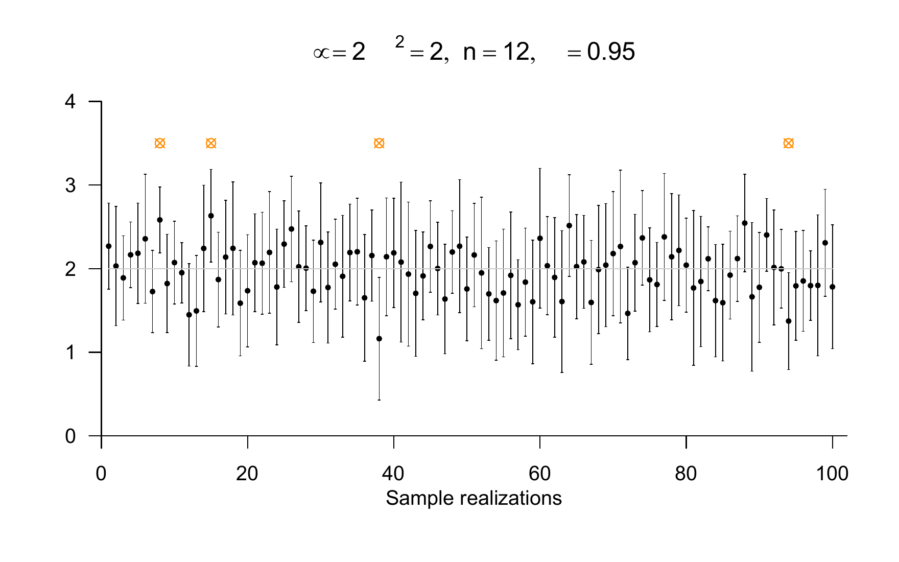
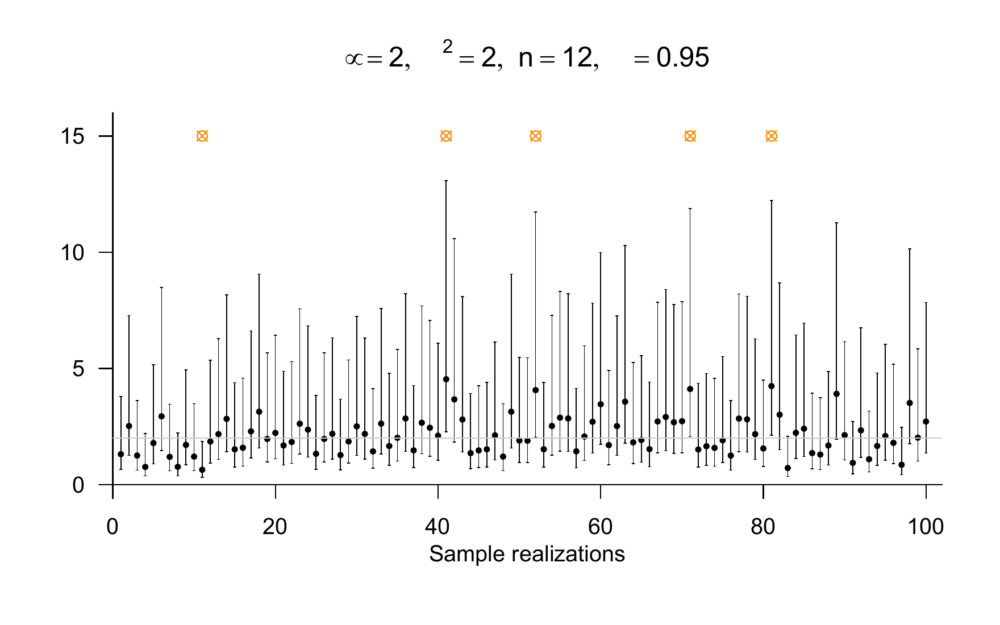

# model specification
mu = 10 # true, but unknown, expectation parameter
sigsqr = 4 # true, but unknown, variance parameter
n = 12 # sample size
ns = 1e4 # number of sample realizations
res = 1e3 # outcome-space resolution
# analytic definitions and results
yx = seq(3,17,len = res) # y_i space
ssqrx = seq(0,20,len = res) # S^2 space
tx = seq(-4,4,len = res) # T space
p_y_i = dnorm(yx,mu,sqrt(sigsqr)) # y_i PDF
p_y_bar = dnorm(yx,mu,sqrt(sigsqr/n)) # y_bar PDF
p_sqr = dchisq(ssqrx,n-1) # S^2 PDF
p_t = dt(tx,n-1) # T PDF
# simulation
y_i = rep(NaN,ns) # y_i array
y_bar = rep(NaN,ns) # \bar{y} array
S = rep(NaN,ns) # S array
TKS = rep(NaN,ns) # T confidence-interval statistic array
for(s in 1:ns){ # simulation iterations
y = rnorm(n,mu,sqrt(sigsqr)) # sample realization
y_i[s] = y[1] # sample realization y_i with i = 1
y_bar[s] = mean(y) # sample mean realization
S[s] = sd(y) # sample standard-deviation realization
TKS[s] = sqrt(n)*((y_bar[s]-mu)/S[s]) # T confidence-interval statistic realization
}32 Confidence intervals
Confidence intervals are interval estimates of true, but unknown, parameters that are constructed so that they are correct in most cases. The gain in certainty about the accuracy of the estimate, compared with point estimation, comes at the cost of a loss in precision. In point estimation, the estimate of a true, but unknown, parameter value, such as \(\theta = 2\), is very precise, for example \(\hat{\theta} = 2.14\). However, against the background of the vanishing probability that a continuous random variable takes exactly one real value, this estimate is almost certainly wrong. Estimating a true, but unknown, parameter by an interval, such as \([1.94, 2.34]\), is coarser. Such an estimate, however, can be constructed so that it is correct with a large desired probability. To express this intuition formally, we first focus in this chapter on one-dimensional parameter spaces. Thus, we consider \(\Theta \subseteq \mathbb{R}\) and hence indeed only confidence intervals, that is, subsets of \(\mathbb{R}\). A generalization of the concepts introduced here to higher-dimensional parameter spaces in the sense of confidence sets is, however, possible without major difficulty.
32.1 Definition
Definition 32.1 (\(\delta\) confidence interval) Let \(y\) be the sample of a frequentist inference model with true, but unknown, parameter \(\theta \in \Theta\), let \(\delta \in \,]0,1[\), and let \(G_u(y)\) and \(G_o(y)\) be given. Then an interval of the form \[\begin{equation} \kappa(y) := [G_u(y), G_o(y)], \end{equation}\] such that \[\begin{equation} \mathbb{P}_\theta\left(\kappa(y) \ni \theta\right) = \mathbb{P}_\theta\left(G_u(y) \le \theta \le G_o(y) \right) = \delta \mbox{ for all } \theta \in \Theta \end{equation}\] holds is called a \(\delta\) confidence interval for \(\theta\). \(\delta\) is the coverage probability of \(\kappa(y)\) for \(\theta\) and is usually called the confidence level. The statistics \(G_u(y)\) and \(G_o(y)\) are called the lower and the upper bound of the confidence interval, respectively.
Note that, as in all frequentist inference models, the parameter \(\theta\) is a true, but unknown, value here and therefore, in particular, fixed and not random. Because the upper and lower bounds of a confidence interval are random variables as functions of the random sample, however, the confidence interval defined by them is a random interval. The somewhat unusual notation \(\kappa(y) \ni \theta\) simply means \(\theta \in \kappa(y)\). Since \(\kappa(y)\) is the random entity in the expression \(\mathbb{P}_\theta\left(\kappa(y) \ni \theta\right)\), as just described, \(\kappa(y)\) is conventionally written on the left. In this respect, think for example of an expression such as \(\mathbb{P}(\xi = x)\). According to Definition 32.1, a \(\delta\) confidence interval covers the true, but unknown, parameter \(\theta\) with probability \(\delta\). A high coverage probability of \(\delta := 0.95\) is often chosen. In this case, one speaks of a \(95\%\) confidence interval.
Intuitively, one may interpret \(\delta\) confidence intervals in two ways. In the first case, one assumes repeated independent realizations of samples with an identical true, but unknown, parameter \(\theta\). Thus, if one repeatedly realizes data “under the same circumstances”, a \(\delta\) confidence interval covers this true, but unknown, parameter in \(\delta \cdot 100 \%\) of the realized cases in the long run. Alternatively, however, according to Definition 32.1, this frequentist probability of covering the true, but unknown, parameter also holds for any arbitrary true, but unknown, parameter value \(\theta_i, i = 1,2,...\). Thus, even if one considers different true, but unknown, parameter values \(\theta_1,\theta_2,...\) and, in each case, records a sample realization that is independent of the other realizations, the corresponding \(\delta\) confidence intervals cover these true, but unknown, parameters in \(\delta \cdot 100 \%\) of the cases in the long run. Intuitively, one therefore does not need to repeat “one study”, that is, the investigation of one true, but unknown, parameter value, “infinitely often” under the same circumstances in order to benefit from the coverage probability of a confidence interval. Rather, it is sufficient to determine confidence intervals according to Definition 32.1 in “different studies”, that is, investigations of different true, but unknown, parameters. In this case, too, their coverage probability for the true, but unknown, parameters is guaranteed.
To construct \(\delta\) confidence intervals for given frequentist inference models by explicitly specifying the statistics \(G_u(y)\) and \(G_o(y)\), one proceeds as follows. First, one defines the inference model and thereby fixes the distribution of the sample \(y\). In a second step, one defines a statistic, that is, a function of the sample, that serves as the basis for \(G_u(y)\) and \(G_o(y)\), and analyzes its distribution, which is based on the sampling distribution. Once the corresponding distribution has been found, it can be used to guarantee the coverage probability of the true, but unknown, parameter by an appropriately defined confidence interval. We trace this procedure in the development and constructive proofs of the following examples.
32.2 Examples of confidence intervals
Confidence interval for the expectation parameter of the normal distribution model
We consider the construction of a \(\delta\) confidence interval for the expectation parameter of the normal distribution model. To this end, we first define the following confidence-interval statistic.
Definition 32.2 (\(T\) confidence-interval statistic) Given the normal distribution model \[\begin{equation} y_1,...,y_n \sim N\left(\mu,\sigma^2\right) \end{equation}\] the statistic defined by the sample mean and the sample standard deviation \[\begin{equation} \bar{y} := \frac{1}{n}\sum_{i=1}^n y_i \mbox{ and } S := \sqrt{\frac{1}{n-1}\sum_{i=1}^n(y_i - \bar{y})^2}, \end{equation}\] namely \[\begin{equation} T := \sqrt{n}\frac{\bar{y} - \mu}{S} \end{equation}\] is called the \(T\) confidence-interval statistic.
For the distribution of the \(T\) confidence-interval statistic, the following theorem holds.
Theorem 32.1 (Distribution of the \(T\) confidence-interval statistic) The \(T\) confidence-interval statistic is a \(t\)-distributed random variable with parameter \(n-1\); that is, \[\begin{equation} T \sim t(n-1) \end{equation}\]
Note that, according to Definition 32.2, the \(T\) confidence-interval statistic is a function of the sample, whereas its distribution according to Theorem 32.1 is independent of the true, but unknown, parameters of the sampling distribution. This is also called the pivot property of the \(T\) confidence-interval statistic. For the following developments, recall that we denote the PDF of a \(t\)-distributed random variable by \(t\), the CDF of a \(t\)-distributed random variable by \(\Psi\), and the inverse CDF of a \(t\)-distributed random variable by \(\Psi^{-1}\). The following R code first simulates the distribution of the \(T\) confidence-interval statistic.

In Figure 32.1, we visualize the distribution of the \(T\) confidence-interval statistic as a result of its underlying distributions of the sample variables, the sample mean, and the sample variance (cf. Theorem 29.13). Using the distribution of the \(T\) confidence-interval statistic, we can now prove the following theorem on the confidence interval for the expectation parameter of the normal distribution model.
Theorem 32.2 (Confidence interval for the expectation parameter of the normal distribution model) Given the normal distribution model \[\begin{equation} y_1,...,y_n \sim N(\mu,\sigma^2) \end{equation}\] with true, but unknown, parameters \(\mu\) and \(\sigma^2\), let \(\delta \in ]0,1[\) and let \[\begin{equation} t_\delta := \Psi^{-1}\left(\frac{1+\delta}{2}; n-1\right). \end{equation}\] where \(\Psi^{-1}\) is the inverse CDF of a \(t\)-distributed random variable. Then, for the interval \[\begin{equation} \kappa(y) := \left[\bar{y} - \frac{S}{\sqrt{n}}t_\delta, \bar{y} + \frac{S}{\sqrt{n}}t_\delta\right], \end{equation}\] with the sample mean and the sample standard deviation \[\begin{equation} \bar{y} := \frac{1}{n}\sum_{i=1}^n y_i \mbox{ and } S := \sqrt{\frac{1}{n-1}\sum_{i=1}^n(y_i - \bar{y})^2}, \end{equation}\] respectively, it holds that \[\begin{equation} \mathbb{P}_{\mu}(\kappa(y) \ni \mu) = \delta. \end{equation}\]
Proof. For \(\delta \in ]0,1[\), first define \[\begin{equation} t_1 := \Psi^{-1}\left(\frac{1 - \delta}{2}; n - 1\right) \mbox{ and } t_2 := \Psi^{-1}\left(\frac{1 + \delta}{2}; n-1\right) \end{equation}\] Then \[\begin{equation} \frac{1+\delta}{2} - \frac{1-\delta}{2} = \delta \end{equation}\] and, by the symmetry of the PDF of the \(t\) distribution, also \[\begin{equation} t_1 = - t_2. \end{equation}\] By definition, using Definition 32.2 and Theorem 32.1, it follows that \[\begin{equation} \mathbb{P}_\mu\left(-t_{\delta} \le T \le t_{\delta} \right) = \delta. \end{equation}\] Consequently, we obtain directly \[\begin{align} \begin{split} \delta & = \mathbb{P}_\mu\left(-t_\delta \le T \le t_\delta \right) \\ & = \mathbb{P}_\mu\left(-t_\delta \le \frac{\sqrt{n}}{S}(\bar{y} - \mu) \le t_\delta \right) \\ & = \mathbb{P}_\mu\left(-\frac{S}{\sqrt{n}}t_\delta \le \bar{y} - \mu \le \frac{S}{\sqrt{n}}t_\delta \right) \\ & = \mathbb{P}_\mu\left(-\bar{y} -\frac{S}{\sqrt{n}}t_\delta \le - \mu \le - \bar{y} + \frac{S}{\sqrt{n}}t_\delta \right) \\ & = \mathbb{P}_\mu\left(\bar{y} + \frac{S}{\sqrt{n}}t_\delta \ge \mu \ge \bar{y} - \frac{S}{\sqrt{n}}t_\delta \right) \\ & = \mathbb{P}_\mu\left(\bar{y} - \frac{S}{\sqrt{n}}t_\delta \le \mu \le \bar{y} + \frac{S}{\sqrt{n}}t_\delta \right) \\ & = \mathbb{P}_\mu\left(\left[\bar{y} - \frac{S}{\sqrt{n}}t_\delta, \bar{y} + \frac{S}{\sqrt{n}}t_\delta\right] \ni \mu \right). \\ & = \mathbb{P}_\mu\left(\kappa(y) \ni \mu \right). \\ \end{split} \end{align}\]
The decisive step for guaranteeing the coverage probability \(\delta\) of the true, but unknown, expectation parameter by the confidence interval defined in Theorem 32.2 is the definition of \[\begin{equation} t_\delta := \Psi^{-1}\left(\frac{1+\delta}{2}; n-1\right). \end{equation}\] As traced in the proof of Theorem 32.2, the coverage probability of the confidence interval for the true, but unknown, expectation parameter is equivalent to the fact that, when this \(t_\delta\) is chosen, the \(T\) confidence-interval statistic has probability \(\delta\) of taking a value in the interval \([-t_\delta, t_\delta]\). We visualize the choice of \(t_\delta\) for the case \(\delta := 0.95\) and \(n := 5\) in Figure 32.2. In this case, \[\begin{equation} -t_\delta = \Psi^{-1}(0.025;4) = -2.57 \mbox{ and } t_\delta = \Psi^{-1}(0.975;4) = 2.57. \end{equation}\] Figure 32.2 A shows this choice from the perspective of the PDF of the \(T\) confidence-interval statistic. The probability mass enclosed by \(-t_\delta\) and \(t_\delta\) is \(\delta\) by construction, so \(T\) takes a value between \(-t_\delta\) and \(t_\delta\) with probability \(\delta\). Figure 32.2 B shows the corresponding perspective of the CDF of the \(T\) confidence-interval statistic. Based on the specification of \(\frac{1-\delta}{2}\) and \(\frac{1+\delta}{2}\), the corresponding values for \(-t_\delta\) and \(t_\delta\) are determined using the inverse CDF \(\Psi^{-1}\). Note that the centrality of the probability mass given here is not implicit in Definition 32.1, but results from the properties of the distribution of the \(T\) confidence-interval statistic, in particular its symmetry around 0.

Finally, we want to demonstrate the coverage probability of the confidence interval given by Theorem 32.2 using a simulation. We consider only the first interpretation of a confidence interval with a constant true, but unknown, parameter. In this sense, the following R code determines the corresponding confidence interval for each sample realization.
# model specification
set.seed(1) # random-number generator
mu = 2 # true, but unknown, expectation parameter
sigsqr = 1 # true, but unknown, variance parameter
sigma = sqrt(sigsqr) # true, but unknown, standard-deviation parameter
n = 12 # sample size
delta = 0.95 # confidence condition
t_delta = qt((1+delta)/2,n-1) # \Psi^-1((\delta + 1)/2, n-1)
# sample realizations
ns = 1e2 # number of sample realizations
y_bar = rep(NaN,ns) # sample-mean array
S = rep(NaN,ns) # standard-deviation array
kappa = matrix(rep(NaN,2*ns), ncol = 2) # confidence-interval array
for(i in 1:ns){
y = rnorm(n,mu,sigma) # sample realization
y_bar[i] = mean(y) # sample mean
S[i] = sd(y) # sample standard deviation
kappa[i,1] = y_bar[i] - (S[i]/sqrt(n))*t_delta # lower confidence-interval bound
kappa[i,2] = y_bar[i] + (S[i]/sqrt(n))*t_delta # upper confidence-interval bound
}We visualize the results of this simulation in Figure 32.3.

Confidence interval for the variance parameter of the normal distribution model
We consider the construction of a \(\delta\) confidence interval for the variance parameter of the normal distribution model. To this end, we first define the following confidence-interval statistic.
Definition 32.3 (\(U\) confidence-interval statistic) Given the normal distribution model \[\begin{equation} y_1,...,y_n \sim N(\mu,\sigma^2) \end{equation}\] the statistic defined by the sample variance \[\begin{equation} \frac{1}{n-1}\sum_{i=1}^n \left(y_i - \bar{y}\right)^2 \end{equation}\] namely \[\begin{equation} U := \frac{n-1}{\sigma^2}S^2 \end{equation}\] is called the \(U\) confidence-interval statistic.
For the distribution of the \(U\) confidence-interval statistic, the following theorem holds.
Theorem 32.3 (Distribution of the \(U\) confidence-interval statistic) The \(U\) confidence-interval statistic is a \(\chi^2\)-distributed random variable with parameter \(n-1\); that is, \[\begin{equation} U \sim \chi^2(n-1) \end{equation}\]
For a proof of Theorem 32.3, we refer to Casella & Berger (2002). Like the \(T\) confidence-interval statistic, the \(U\) confidence-interval statistic has the pivot property because it is a function of the sample, but its distribution according to Theorem 32.3 does not depend on the true, but unknown, distribution parameters of the sample. For the following developments, recall that we denote the PDF of a \(\chi^2\)-distributed random variable by \(\chi^2\), the CDF of a \(\chi^2\)-distributed random variable by \(\Xi\), and the inverse CDF of a \(\chi^2\)-distributed random variable by \(\Xi^{-1}\). The following R code first simulates the distribution of the \(U\) confidence-interval statistic.
# model specification
mu = 10 # true expectation parameter
sigsqr = 4 # true known variance parameter
n = 12 # sample size
ns = 1e4 # number of sample realizations
res = 1e3 # outcome-space resolution
# analytic definitions and results
yx = seq(3,17,len = res) # y_i space
ux = seq(0,30,len = res) # U space
p_y_i = dnorm(yx,mu,sqrt(sigsqr)) # y_i PDF
p_y_bar = dnorm(yx,mu,sqrt(sigsqr/n)) # y_bar PDF
p_u = dchisq(ux,n-1) # U PDF
# simulation
y_i = rep(NaN,ns) # y_i array
y_bar = rep(NaN,ns) # \bar{y} array
S_sqr = rep(NaN,ns) # S^2 array
UKS = rep(NaN,ns) # U confidence-interval statistic array
for(s in 1:ns){ # simulation iterations
y = rnorm(n,mu,sqrt(sigsqr)) # sample realization
y_i[s] = y[1] # sample realization y_i with i = 1
y_bar[s] = mean(y) # sample-mean realization
S_sqr[s] = var(y) # sample-variance realization
UKS[s] = ((n-1)/sigsqr)*S_sqr[s] # U confidence-interval statistic realization
}
Using the distribution of the \(U\) confidence-interval statistic, we can now prove the following theorem on the confidence interval for the variance parameter of the normal distribution model.
Theorem 32.4 (Confidence interval for the variance parameter of the normal distribution model) Given the normal distribution model \[\begin{equation} y_1,...,y_n \sim N(\mu,\sigma^2) \end{equation}\] with true, but unknown, parameters \(\mu\) and \(\sigma^2\), let \(\delta \in ]0,1[\) and let \[\begin{equation} u_{\delta} := \Xi^{-1}\left(\frac{1 - \delta}{2}; n -1 \right) \mbox{ and } u_{\delta}' := \Xi^{-1}\left(\frac{1 + \delta}{2};n-1 \right) \end{equation}\] where \(\Xi^{-1}\) is the inverse CDF of a \(\chi^2\)-distributed random variable. Then, for the interval \[\begin{equation} \kappa(y) := \left[\frac{(n-1)S^2}{u_{\delta}'}, \frac{(n-1)S^2}{u_{\delta}}\right]. \end{equation}\] with the sample variance \[\begin{equation} S^2 := \frac{1}{n-1}\sum_{i=1}^n(y_i - \bar{y})^2, \end{equation}\] it holds that \[\begin{equation} \mathbb{P}_{\sigma^2}(\kappa(y) \ni \sigma^2) = \delta. \end{equation}\]
Proof. By definition, using Definition 32.3 and Theorem 32.3, we have \[\begin{equation} \mathbb{P}_{\sigma^2}\left(u_{\delta} \le U \le u_{\delta}' \right) = \delta. \end{equation}\] Consequently, it follows directly that \[\begin{align} \begin{split} \delta & = \mathbb{P}_{\sigma^2}\left(u_{\delta} \le U \le u_{\delta}' \right) \\ & = \mathbb{P}_{\sigma^2}\left(u_{\delta} \le \frac{n-1}{\sigma^2}S^2 \le u_{\delta}' \right) \\ & = \mathbb{P}_{\sigma^2}\left(u_{\delta}^{-1} \ge \frac{\sigma^2}{(n-1)S^2} \ge {u_{\delta}'}^{-1} \right) \\ & = \mathbb{P}_{\sigma^2}\left(\frac{(n-1)S^2}{u_{\delta}} \ge \sigma^2 \ge \frac{(n-1)S^2}{u_{\delta}'} \right) \\ & = \mathbb{P}_{\sigma^2}\left(\frac{(n-1)S^2}{u_{\delta}'} \le \sigma^2 \le \frac{(n-1)S^2}{u_{\delta}} \right) \\ & = \mathbb{P}_{\sigma^2}\left(\left[\frac{(n-1)S^2}{u_{\delta}'}, \frac{(n-1)S^2}{u_{\delta}}\right] \ni \sigma^2 \right). \\ \end{split} \end{align}\]
As in the case of Theorem 32.2, the decisive step for guaranteeing the coverage probability \(\delta\) of the true, but unknown, variance parameter by the confidence interval defined in Theorem 32.4 is the definition of \[\begin{equation} u_{\delta} := \Xi^{-1}\left(\frac{1-\delta}{2}; n-1\right) \mbox{ and } u_{\delta}' := \Xi^{-1}\left(\frac{1 + \delta}{2};n-1 \right). \end{equation}\] As traced in the proof of Theorem 32.4, the coverage probability of the confidence interval for the true, but unknown, variance parameter is equivalent to the fact that, when precisely these values of \(u_\delta\) and \(u_{\delta}'\) are chosen, the \(U\) confidence-interval statistic has probability \(\delta\) of taking a value in the interval \([u_{\delta}, u_{\delta}']\). We visualize the choice of \(u_\delta\) and \(u_\delta'\) for the case \(\delta := 0.95\) and \(n := 10\) in Figure 32.5. In this case, \[\begin{equation} u_{\delta} := \Xi^{-1}\left(0.025;9\right) = 2.70 \mbox{ and } u_{\delta}' := \Xi^{-1}\left(0.975;9\right) = 19.0. \end{equation}\] Figure 32.5 A shows this choice from the perspective of the PDF of the \(U\) confidence-interval statistic. The probability mass enclosed by \(u_\delta\) and \(u_\delta'\) is \(\delta\) by construction, so \(U\) takes a value between \(u_\delta\) and \(u_\delta'\) with probability \(\delta\). Figure 32.5 B shows the corresponding perspective of the CDF of the \(U\) confidence-interval statistic. Based on the specification of \(\frac{1-\delta}{2}\) and \(\frac{1+\delta}{2}\), the corresponding values for \(u_\delta\) and \(u_\delta'\) are determined using the inverse CDF \(\Xi^{-1}\). Note that in this case the probability mass is located rather arbitrarily with respect to the mode of the distribution of the \(U\) confidence-interval statistic. Accordingly, there are more advanced procedures for locating the coverage probability of a confidence-interval statistic in such a way that, for example, it occupies a maximal interval in its outcome space or satisfies a symmetry property around the expectation. We do not pursue these approaches here.

Finally, we want to demonstrate the coverage probability of the confidence interval given by Theorem 32.4 using a simulation. To this end, we first consider the first interpretation of a confidence interval given in Section 32.1, with the same true, but unknown, parameter throughout. In this sense, the following R code determines the corresponding confidence interval for each sample realization.
# model specification
set.seed(1) # random-number generator
mu = 2 # true, but unknown, expectation parameter
sigsqr = 2 # true, but unknown, variance parameter
n = 12 # sample size
delta = 0.95 # confidence condition
u_delta = qchisq((1-delta)/2, n - 1) # \Xi^2((1-\delta)/2; n - 1)
u_delta_p = qchisq((1+delta)/2, n - 1) # \Xi^2((1+\delta)/2; n - 1)
# sample realizations
ns = 1e2 # number of simulations
y_bar = rep(NaN,ns) # sample-mean array
S2 = rep(NaN,ns) # sample-variance array
kappa = matrix(rep(NaN,2*ns), ncol = 2) # confidence-interval array
for(i in 1:ns){ # simulation iterations
y = rnorm(n,mu,sqrt(sigsqr)) # sample realization
S2[i] = var(y) # sample variance
kappa[i,1] = (n-1)*S2[i]/u_delta_p # lower confidence-interval bound
kappa[i,2] = (n-1)*S2[i]/u_delta # upper confidence-interval bound
}
Example 32.1 (Application example) To conclude this section, we consider the evaluation of confidence intervals for the expectation and variance parameters under normality in the context of Example 30.5. To this end, we first evaluate the unbiased point estimators of \(\mu\) and \(\sigma^2\), that is, the sample mean and the sample variance of the dataset, using the following R code.
mu_hat : 3.17
sigsqr_hat : 13.79Based on these estimators and the available \(n = 12\) data points, \[\begin{equation} \hat{\mu} = 3.17 \mbox{ and } \hat{\sigma}^{2} = 13.8 \end{equation}\] are therefore reasonable guesses for \(\mu\) and \(\sigma^2\). In addition to these point estimates, which are very precise but match the true, but unknown, parameters with probability 0, we also determine the \(95\%\) confidence-interval estimates for \(\mu\) and \(\sigma^2\). The following R code determines the \(95\%\) confidence interval for the expectation parameter.
# confidence interval for the expectation parameter
delta = 0.95 # confidence level
n = length(y) # number of data points
t_delta = qt((1+delta)/2,n-1) # \psi^-1((\delta+1)/2,n-1)
y_bar = mean(y) # sample mean
s = sd(y) # sample standard deviation
mu_hat = y_bar # expectation-parameter estimator
kappa_u = y_bar - (s/sqrt(n))*t_delta # lower confidence-interval bound
kappa_o = y_bar + (s/sqrt(n))*t_delta # upper confidence-interval bound
cat("kappa_u:", kappa_u, "\nkappa_o:", kappa_o) # outputkappa_u: 0.8074098
kappa_o: 5.525923The 0.95 confidence interval for the expectation parameter is therefore \[\begin{equation} \kappa(y) = [0.80,5.52]. \end{equation}\] In the long-run average, a confidence interval calculated in this way covers the true, but unknown, expectation parameter in 95 out of 100 cases. In this sense, the true, but unknown, treatment effect is therefore very likely to lie in an interval between 0.80 and 5.52 BDI-II score pre-post differences.
The following R code determines the \(95\%\) confidence interval for the variance parameter.
# confidence interval for the variance parameter
delta = 0.95 # confidence level
n = length(y) # number of data points
u_delta_u = qchisq((1-delta)/2, n - 1) # \Xi^2((1-\delta)/2; n - 1)
u_delta_o = qchisq((1+delta)/2, n - 1) # \Xi^2((1+\delta)/2; n - 1)
s2 = var(y) # sample variance
sigsqr_hat = s2 # variance-parameter estimator
kappa_u = (n-1)*s2/u_delta_o # lower confidence-interval bound
kappa_o = (n-1)*s2/u_delta_u # upper confidence-interval bound
cat("kappa_u:", kappa_u, "\nkappa_o:", kappa_o) # outputkappa_u: 6.919084
kappa_o: 39.74756The 0.95 confidence interval for the variance parameter is therefore \[\begin{equation} \kappa(y) = [6.91,39.74]. \end{equation}\] In the long-run average, a confidence interval calculated in this way covers the true, but unknown, variance parameter in 95 out of 100 cases. In this sense, the true, but unknown, treatment-effect dispersion is therefore very likely to lie in an interval between 6.91 and 39.74 squared BDI-II score pre-post differences.
32.3 Bibliographic remarks
The results presented in this chapter go back in a very substantial way to Neyman (1937).
Study questions
- State the definition of the concept of a \(\delta\) confidence interval.
- Explain the two interpretations of a \(\delta\) confidence interval.
- Explain the typical steps for constructing a \(\delta\) confidence interval.
- State the theorem on the confidence interval for the expectation parameter of the normal distribution model.
- State the theorem on the confidence interval for the variance parameter of the normal distribution model.
Study question answers
- See Definition 32.1.
- See the discussion following Definition 32.1.
- See the last paragraph of the discussion following Definition 32.1.
- See Theorem 32.2.
- See Theorem 32.4.
Casella, G., & Berger, R. (2002). Statistical Inference (2nd ed.). Thomson Learning.
Neyman, J. (1937). Outline of a Theory of Statistical Estimation Based on the Classical Theory of Probability. Statistical Stimation.